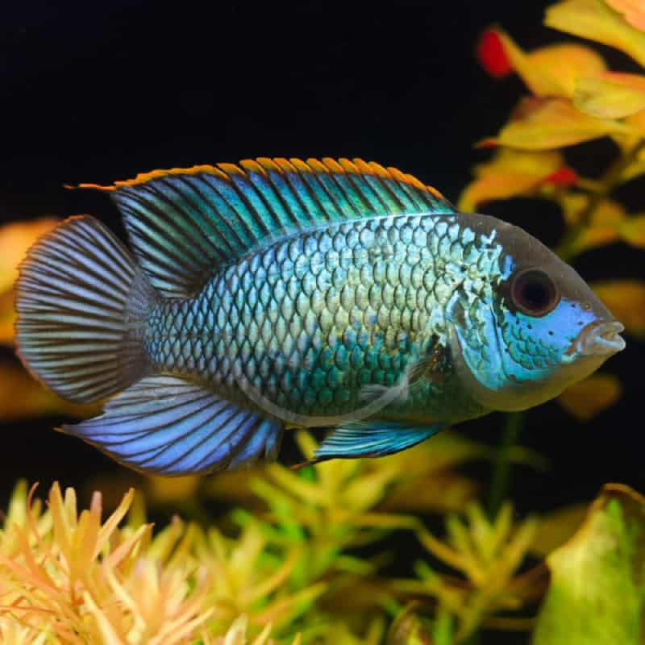
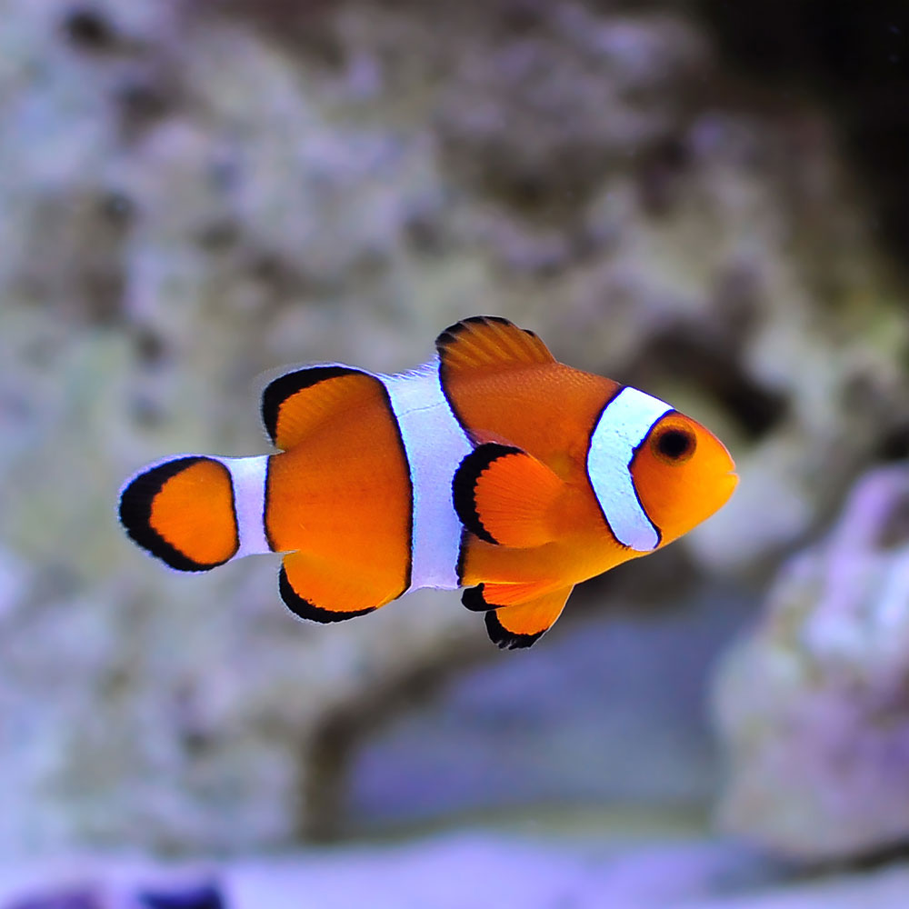
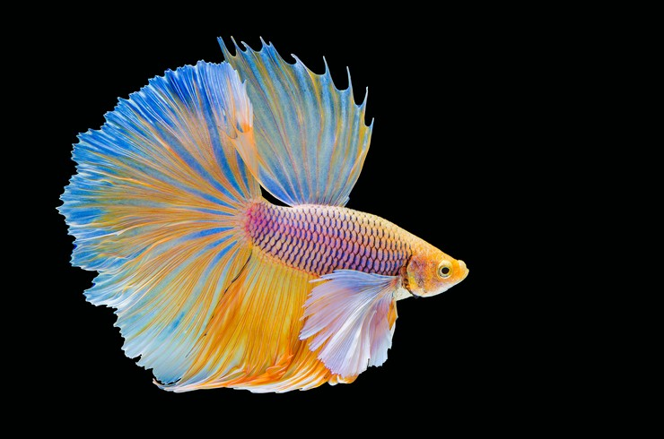

Martin’s Fish

Species: Guppy
Length: 2 inches
Name: Martin
Harvested: South America
Diet: Omnivore

Species: Akara
Length: 6-8 inches
Name: Blake
Harvested: Central America and South America
Diet: Omnivore

Species: Clownfish
Length: 9 inches
Name: Noa
Harvested: Northern Queensland, Australia to Melanesia, including New Britain, New Guinea, New Ireland, the Solomon Islands, and Vanuatu:
Diet: Fish food

Species: Pivnyky
Length: 2 inches
Name: Akuro
Harvested: Southeast Asia
Diet: Fish food
How to clean a fishtank
1. Clean the water
2. Clean the decorations and the filter if necessary
3. Measure the temperature
4. Adjust water salinity